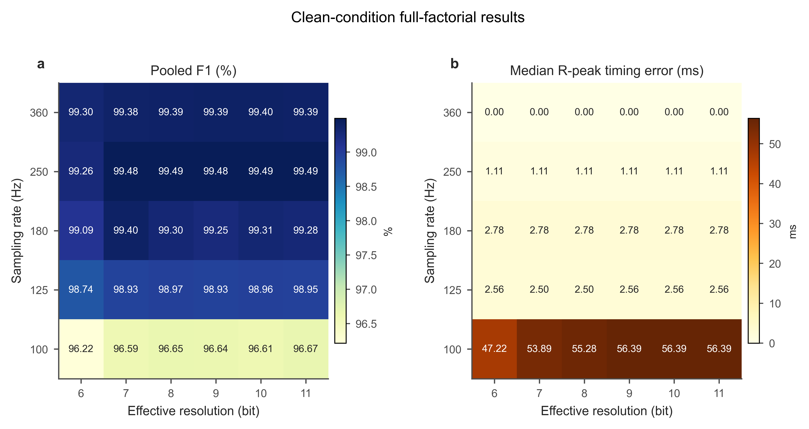

面向可穿戴心电监护的工程参数选择
在保证R峰检测可靠性的前提下，寻找更低数据率采集配置。
项目使用MIT-BIH Arrhythmia Database和MIT-BIH Noise Stress Test Database， 对5种采样率、6种ADC有效位数组成的30种配置进行全因子评估。
Final audit: PASS · 17/17
360 Hz
/
6 bit
推荐配置
Clean F1
99.305%
F1下降
0.086 pp
码率降低
45.5%
Course Rubric
指导书评分项已经映射到报告、结果和展示材料
本页把老师最关心的完整性证据放在交互分析前：医学场景、系统设计、方法实现、结果评价、讨论改进、图表规范、引用格式和附录资料均有对应交付物。
可穿戴ECG长时监护、R峰/RR任务边界、应用需求-工程约束-指标表。
虚拟采集链路、模拟前端参数化模型、ADC量化与数据率计算。
MIT-BIH/NSTDB、XQRS固定检测器、全因子脚本和本人实现工作说明。
30组配置、噪声压力测试、推荐配置达标表和失败原因分析。
医学、工程、算法、数据四类限制，明确不外推临床诊断和真实功耗。
图1-图8、表1-表8统一编号，网页提供可交互的证据入口。
PhysioNet、MIT-BIH、NSTDB、WFDB与QRS检测文献统一列入报告。
核心参数、关键脚本、结果文件索引、GitHub与Pages链接。
Interactive Analysis
从配置到证据的可视化分析台
选择采样率和ADC有效位数后，页面会同步更新推荐指标、Clean条件矩阵、SNR抗噪曲线和候选配置表。
Selected Configuration
--
Clean Full Factorial
配置矩阵
较优
较弱
Noise Stress Test
SNR鲁棒性曲线
Design Candidates
候选配置表
| 配置 | Clean F1 | F1下降 | 码率 | 噪声最坏下降 | 结论 |
|---|
Generated Evidence
实验图集
